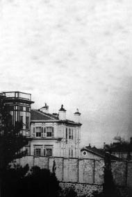

Altunizade İsmail Paşa köşkü Çamlıca’da Koşuyolu’nda, Altunizade Camii civarında idi. Çok da ferah bir köşktü. İsmail Paşa neydi; nenin paşasıydı? Nereli ve nereden gelmişti. Bilenler bize şöyle söylüyorlardı: İsmail Efendi esnaftandı. Altın varakçılar esnafındandı. Mesaisi ve dikkati meşhur ve makbul olduğu için gitgide onu saraylarda meşgul ettiler. Öteyi beriyi yaldızlattılar ve onu bina eminliğine tayin buyurdular. Artık ötede beride yapılan hususi sarayları, saraycıkları İsmail Efendi yaptırıyor; her şeylerine bakıyordu. Böylece; fakat namuskârane çalıştığı cihetle helal para kazanıyordu. Bittabi zengin oldu. Talihi de yaver olmakla mal-ı karuna[162] sahip oldu. Bu da olunca en çok sevdiği Çamlıca’da arsalar, bahçeler satın aldı; köşkünü yaptı; camiyi inşa ettirdi. Hayratını da yaptı; iradını da yaptı; yan geldi keyfine baktı.
Yalnız keyfine bakmadı, fukaraya da baktı. Hesabını bilen bir eli açıklıkla yaşadı, yaşattı. Bu da meşhur ve çok takdir olunmuştur: 1293 [1878] harbinde kesesinden mükemmel bir tabur teşkil ve teçhiz ederek ordunun emrine verdi. Paşalığı bu hizmetinin mükâfatıdır. Vefatında iki haremi vardı. Biri olduğu gibi kaldı; diğeri Mahkeme-i Temyiz azasından Firarî Ahmet Paşazade Tevfik Bey’e vardı. Varisi, yeğeni Altunizade Necip Bey’di. Bu zatı ben tanırım. Çocukluğumda Çamlıca’da oturduğumuz zaman hayatta ve bizlerle sık sık görüşmekteydi. Paşanın, Kadri isminde bir kâhyasını da tanımıştım ki, bu adam caminin de hesap memuruydu. Son günlerini sedye üzerinde ve bahçelerinde geze geze geçiren paşayı tanımadım. Çok ihtiyar olarak Çamlıca’da ölmüştür.
Validebağı
Bu ismi alan sarayı, arsasını Hazine-i Hassa’ya sattıktan sonra inşa eden zat gene İsmail Paşa’dır ve gene bina eminidir.[163] Maharetinin son haddini bu bina için sarf etmiş, saray emsaline faik bir şekilde meydana getirmişti. O kadar muvaffak olmuştu ki Sultan Aziz’in çok hoşuna gitmiş, bina eminini uzun uzun taltif etmişti.
Bu saray en sonra II. Sultan Mahmud’un kerimesi Adile Sultan’a senelerce ikametgâh olup sultanın vefatından sonra artık kapısını kapatmış ve bugünkü işe açılıncaya kadar kapalı kalmıştı. Yemiş ağaçlarıyla bağları ve bostanlarıyla, hele üzümleriyle çok meşhur ve sultan hayatta iken dört başı mamur idi.
Validebağı’nda bir de Valide kâhyası Said Efendi’nin köşkü vardı. Bu Said Efendi Sultan II. Hamid’in başmayincisi Hacı Ali Paşa’nın kardeşiydi ve Konya’nın Aksaray kazası evladındandır. Said Efendi’nin konağı Nişantaşı’nda Maçka’da ve biraderinin yanında idi. Oldukça da kalabalıktılar. Dalkavukları pek çoktu; amma Aksaraylılar çoktu. Ve bu misafirliklere payan yoktu. Said Efendi, kerimesi Saide Hanım’ı, biraderi Hacı Ali Paşa’nın mahdumu, yaveran-ı hazret-i şehriyariden Mehmed Paşa ile evlendirdi. Evlendirdi, amma bu izdivaçtan mesut olmadılar ve bu hal ailenin rahatını kaçırdı. Hâlbuki diğer kızı Safiye Hanım’ı Ziya Bey adlı bir zata vermişlerdi; bunlar mesut oldular. Ziya Bey Mekteb-i Mülkiye mezunlarındandı. Sonra ne oldu; hatta bu kalabalık aile ne oldular, bilmiyorum. Benim otuz seneye yakın bir zaman içinde; fakat kendi ihtiyarımla Avrupa’da ikametim bu baptaki malumatımı nasıl olsa biraz karıştırdığından ehibbadan birçoğunu kaybetmiş bir vaziyetteyim. Yalnız bittesadüf şu kadarını bilmiştim: Bu Ziya Bey bir aralık Hariciye Hukuk Müşaviri olmuştu.
Said Efendi bahçeye ve bağa çok meraklıydı ve muvaffaktı. Kardeşine sepet sepet üzüm getirdiğini görürdüm. Saide Hanım sonraları Necmeddin adlı bir zata varmıştı galiba; fakat çok yaşamadı; öldü.
Koşuyolu
Bu yolda bir iki köşk daha nasılsa hatırımdan çıkmamış. Biri Posta ve Telgraf Nâzırı Hasip Efendi’ninki idi. Önü bahçeli, parmaklıklı ve iki yüksek katlı (şimdi bu tabir huzur-ı âlilerine veya makam-ı âlileri gibi bir tabir oldu) öteki de gene bir ahşap köşktü; Müşir İzzet Paşa Köşkü denmekle maruftu. Bu paşa zannediyorum ordu müşirliklerinde ve valiliklerde bir aralık da seraskerlikte bulunmuştu. Hasip Efendi’nin köşkü Haydarpaşa sırtlarına çok yakındı; bu paşanın köşkü de Hasip Efendi’ye yakındı. Her ikisinde yüksek ağaçlar ve çamlar vardı. Fakat bilmiyorum bağları var mıydı?
Gene bu yolda sonraları Feridun Nevcivan Paşa’ya intikal eden bir köşk daha vardı; amma ilk sahipleri kimdi şimdi derhatır edemiyorum. Yalnız haberim var: Bugün bu bina belediyenin elindedir ve aceze-i muharririne tahsis olunacakmış, diye de bir masalı vardır. Arka taraflarında ve biraz uzağında dayım Neşet Paşa’nın bir köşkü ve güzel yemiş ağaçları, bağı vardı; amma zannederim elden çıkardılar. Neşet Paşa iki sene mukaddem vefat eden avukat ve milletvekili Selahaddin Bey’in babasıdır. Bahsi yukarıda geçmiş ve kapanmış olmasına rağmen, aklıma geldiği için –ibreten lissairin- mutlaka söylemeliyim: Saide Hanım’dan ayrıldıktan ve babasını kaybettikten sonra eline düşen serveti Zavallı Mehmed Paşa dalkavuklara yedirmiştir. Üşüştüler; biçareyi mahvettiler. Hüsranlar içinde öldü, gitti zavallı. Cenab-ı Hak cümlesine rahmet eyleye.
Yakacık Tarafı
Yakacık’ta gayet güzel bir köşk vardı. Darüssaadetü’ş-şerife ağalarından[164] birinin malikânesiydi. Şöhreti de üzümleriydi. Üzümlerim en âlâsından olsun, hünkâr en çok onları beğensin derdiyle Kızlarağası bağına ve bahçıvanına fevkalade dikkat eder; bu bapta dünyanın masrafını yapardı. Emeline de muvaffak olurdu. Padişah “Şu Arap’ın üzümünü getirin” dedikçe ağanın keyfi gelirdi. Bu hal epeyce devam etti; amma sonu, ağanın eceli geldi; öldü. Köşkü de varisi olmadığı için –usuldendi- Hazine-i Hassa’ya geçti. Senelerce şuna buna kiraladılar. Fakat mütemadi tamirata ehemmiyet vermediklerinden hem köşkü, hem de bağları hırpalattılar. Bir yazık daha oldu, gitti.
Yakacık’ın güzel köşklerinden biri de Nakibü’l-eşraf Ali Rıza Efendi’ninkiydi. Yemişleriyle, sebzeleriyle, üzümüyle şöhret bulmuştu. Bir şöhreti de nezare-i kâmilesiydi.[165] Bu köşk nasılsa dayandı; elden ele geçmedi. Çünkü efendinin oğlu Kadri Bey’e baba ocağını söndürmemek mukadder olmuştu. Senelerce bu aile bu köşkte oturdular, orada ikmal-i enfas ettiler.[166] Yanılmıyorsam eğer bu köşk Kadri Bey’in vefatından sonra gene ailede kalmıştır. Kadri Bey benden çok büyük yaşta olmakla beraber Âmedî-i Divan-ı Hümayun kaleminde beraberdik. Uzun boylu, iri kemikli, kuvvetli, pala bıyıklı bir zat-ı celadet-simat idi.[167] Ve iyi bir adamdı; çok namuskâr idi. Yakacık’ta bir köşk daha tanırım: Cemal Bey’in köşkü. Fakat tafsilatını bu yazıdan sonraya bırakıyorum.
Akşam, 6 Mayıs 1948
